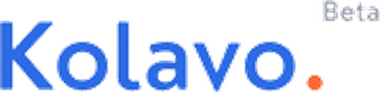

<meta charset="utf-8">
<meta name="viewport" content="width=device-width,initial-scale=1">
<title>ReDesign Kolavo — Modal Masuk</title>
<link rel="preconnect" href="https://fonts.googleapis.com">
<link rel="preconnect" href="https://fonts.gstatic.com" crossorigin>
<link rel="stylesheet" href="https://fonts.googleapis.com/css2?family=Poppins:wght@400;500;600;700&family=Roboto:wght@500&display=swap">

<style>
/* ============================================================
   Modal Masuk — token sama persis dengan ReDesign_Kolavo_2.html
   Primary #2D6BE4 · hover #0045CD · pill radius 100 · Poppins
   ============================================================ */
:root{
  --bg:#FFFFFF; --bg-alt:#FAFAFA; --card:#FFFFFF;
  --ink:#222222; --ink-2:#6B7280; --ink-3:#9CA3AF;
  --line:#EFEFEF; --line-2:#F4F5F7;
  --blue:#2D6BE4; --blue-hover:#0045CD; --blue-wash:#EBF1FD; --blue-ink:#2D6BE4; --blue-tint:#F5F8FE;
  --orange:#FF683D; --orange-ink:#C64216; --orange-wash:#FFF1EC;
  --green:#12855F; --green-wash:#E8F5EF;
  --red:#C0362C; --red-wash:#FDF0EE; --red-line:#F3CFCA;
  --disabled:#E3E3E3; --btn-ink:#FFFFFF; --ring:rgba(45,107,228,.4);
  --sh-sm:0 1px 2px rgba(34,34,34,.05);
  --sh:0 2px 6px rgba(34,34,34,.05), 0 14px 30px -18px rgba(45,107,228,.35);
  --sh-lg:0 4px 10px rgba(34,34,34,.05), 0 30px 64px -30px rgba(45,107,228,.5);
  --scrim:rgba(20,26,38,.34);
  /* tombol Google — varian terang resmi */
  --g-bg:#FFFFFF; --g-ink:#1F1F1F; --g-line:#747775;
}
@media (prefers-color-scheme: dark){
  :root:not([data-theme="light"]){
    --bg:#0D1017; --bg-alt:#141821; --card:#181D28;
    --ink:#F0F2F6; --ink-2:#A9B0BF; --ink-3:#7E8695;
    --line:#262C39; --line-2:#1E242F;
    --blue:#6F97F5; --blue-hover:#8FB0FF; --blue-wash:#1A2337; --blue-ink:#8FB0FF; --blue-tint:#151B27;
    --orange:#FF8156; --orange-ink:#FF9A78; --orange-wash:#2A170F;
    --green:#4FBF98; --green-wash:#12281F;
    --red:#FF9A8F; --red-wash:#2B1512; --red-line:#4A241F;
    --disabled:#2A303C; --btn-ink:#0D1017; --ring:rgba(111,151,245,.5);
    --sh-sm:0 1px 2px rgba(0,0,0,.45);
    --sh:0 2px 6px rgba(0,0,0,.35), 0 16px 32px -18px rgba(0,0,0,.85);
    --sh-lg:0 4px 10px rgba(0,0,0,.4), 0 34px 68px -32px rgba(0,0,0,.95);
    --scrim:rgba(0,0,0,.55);
    --g-bg:#131314; --g-ink:#E3E3E3; --g-line:#8E918F;
  }
}
:root[data-theme="dark"]{
  --bg:#0D1017; --bg-alt:#141821; --card:#181D28;
  --ink:#F0F2F6; --ink-2:#A9B0BF; --ink-3:#7E8695;
  --line:#262C39; --line-2:#1E242F;
  --blue:#6F97F5; --blue-hover:#8FB0FF; --blue-wash:#1A2337; --blue-ink:#8FB0FF; --blue-tint:#151B27;
  --orange:#FF8156; --orange-ink:#FF9A78; --orange-wash:#2A170F;
  --green:#4FBF98; --green-wash:#12281F;
  --red:#FF9A8F; --red-wash:#2B1512; --red-line:#4A241F;
  --disabled:#2A303C; --btn-ink:#0D1017; --ring:rgba(111,151,245,.5);
  --sh-sm:0 1px 2px rgba(0,0,0,.45);
  --sh:0 2px 6px rgba(0,0,0,.35), 0 16px 32px -18px rgba(0,0,0,.85);
  --sh-lg:0 4px 10px rgba(0,0,0,.4), 0 34px 68px -32px rgba(0,0,0,.95);
  --scrim:rgba(0,0,0,.55);
  --g-bg:#131314; --g-ink:#E3E3E3; --g-line:#8E918F;
}

*{box-sizing:border-box}
body{margin:0;background:var(--bg-alt);color:var(--ink);
  font-family:"Poppins",system-ui,-apple-system,sans-serif;
  font-size:16px;line-height:1.6;-webkit-font-smoothing:antialiased}
p{margin:0}
h1,h2,h3{margin:0;font-weight:600;letter-spacing:-.02em;line-height:1.18;text-wrap:balance}
ul{margin:0;padding:0;list-style:none}
img{max-width:100%}

/* ---------- tombol ---------- */
.btn{display:inline-flex;align-items:center;justify-content:center;gap:8px;
  font-family:inherit;font-weight:500;font-size:16px;line-height:1;
  height:52px;padding:0 24px;border-radius:100px;border:1px solid transparent;
  background:var(--blue);color:var(--btn-ink);text-decoration:none;white-space:nowrap;cursor:pointer;
  transition:background .15s ease,border-color .15s ease,transform .12s ease}
.btn:hover{background:var(--blue-hover);transform:translateY(-1px)}
.btn:focus-visible{outline:3px solid var(--ring);outline-offset:2px}
.btn.secondary{background:var(--bg-alt);color:var(--blue-ink);border-color:var(--blue)}
.btn.secondary:hover{background:var(--blue-wash)}
.btn.md{height:48px}
.btn.sm{height:40px;font-size:14px;padding:0 20px}
.btn.xs{height:32px;font-size:12px;padding:0 16px}
.btn svg{width:17px;height:17px;flex:none}

/* ---------- kepala lab ---------- */
.lab-top{position:sticky;top:0;z-index:40;background:var(--bg);border-bottom:1px solid var(--line);
  padding:14px 22px;display:flex;align-items:center;gap:18px;flex-wrap:wrap}
.lab-top .tt{font-weight:600;font-size:15px;letter-spacing:-.01em}
.lab-top .tt span{color:var(--ink-3);font-weight:400}
.lab-sp{flex:1 1 auto}
.seg{display:inline-flex;background:var(--line-2);border-radius:100px;padding:3px;gap:2px}
.seg button{font-family:inherit;font-size:12.5px;font-weight:500;color:var(--ink-2);
  background:none;border:0;border-radius:100px;padding:7px 14px;cursor:pointer;white-space:nowrap}
.seg button[aria-pressed="true"]{background:var(--card);color:var(--ink);box-shadow:var(--sh-sm)}
.seg button:focus-visible{outline:2px solid var(--ring);outline-offset:1px}
.seg-lbl{font-size:11px;text-transform:uppercase;letter-spacing:.08em;color:var(--ink-3);
  font-weight:600;margin-right:8px}
.seg-group{display:flex;align-items:center}
.seg-group.off{opacity:.35;pointer-events:none}

/* ---------- panggung ---------- */
.lab{max-width:1160px;margin:0 auto;padding:26px 22px 80px}
.stage-hint{font-size:13px;color:var(--ink-2);margin-bottom:12px}
.stage-hint b{color:var(--ink);font-weight:500}
.stage{position:relative;overflow:hidden;border:1px solid var(--line);border-radius:22px;
  background:var(--bg);box-shadow:var(--sh);margin:0 auto;height:680px;
  transition:max-width .25s ease,height .25s ease}
.stage[data-screen="mobile"]{max-width:390px;height:760px}
.stage[data-screen="desktop"]{max-width:100%}
.pg{height:100%;overflow-y:auto}

/* ---------- halaman tiruan ---------- */
.pg-nav{display:flex;align-items:center;gap:10px;padding:14px 20px;border-bottom:1px solid var(--line)}
.pg-logo{height:26px;width:auto}
.pg-hero{padding:38px 20px 30px;text-align:center}
.pg-hero h2{font-size:26px;font-weight:700}
.pg-hero h2 em{font-style:normal;color:var(--orange)}
.pg-hero p{margin-top:10px;color:var(--ink-2);font-size:14px}
.pg-search{margin:20px auto 0;max-width:620px;height:48px;border:1px solid var(--line);
  border-radius:100px;display:flex;align-items:center;padding:0 18px;color:var(--ink-3);font-size:14px;gap:10px}
.pg-cards{display:grid;grid-template-columns:repeat(auto-fill,minmax(228px,1fr));gap:14px;padding:8px 20px 26px}
.cardc{border:1px solid var(--line);border-radius:18px;padding:16px;background:var(--card);
  display:flex;flex-direction:column;gap:10px}
.cardc .tile{width:44px;height:44px;border-radius:12px;object-fit:cover;background:var(--line-2)}
.cardc .nm{font-weight:600;font-size:14px;line-height:1.3}
.cardc .ds{font-size:12.5px;color:var(--ink-2);line-height:1.45}
.cardc .btn{margin-top:auto}
.stage[data-screen="mobile"] .pg-cards{grid-template-columns:1fr}
.stage[data-screen="mobile"] .pg-hero h2{font-size:21px}

/* ---------- scrim + modal ---------- */
.scrim{position:absolute;inset:0;background:var(--scrim);opacity:0;pointer-events:none;
  transition:opacity .16s ease;backdrop-filter:blur(2px)}
.stage.open .scrim{opacity:1;pointer-events:auto}
.stage.open .pg{filter:none}
.mwrap{position:absolute;inset:0;display:flex;align-items:center;justify-content:center;
  padding:26px;pointer-events:none}
.stage.open .mwrap{pointer-events:none}
.modal{position:relative;width:100%;max-width:440px;background:var(--card);border-radius:32px;
  box-shadow:var(--sh-lg);padding:26px 26px 22px;text-align:center;pointer-events:auto;
  opacity:0;transform:translateY(8px) scale(.97);transition:opacity .16s ease,transform .16s ease;
  max-height:100%;overflow-y:auto}
.stage.open .modal{opacity:1;transform:none}
/* mobile = bottom sheet */
.stage[data-screen="mobile"] .mwrap{align-items:flex-end;padding:0}
.stage[data-screen="mobile"] .modal{max-width:none;border-radius:28px 28px 0 0;padding:22px 20px 20px;
  transform:translateY(18px)}
.stage[data-screen="mobile"].open .modal{transform:none}
.grab{display:none}
.stage[data-screen="mobile"] .grab{display:block;width:40px;height:4px;border-radius:100px;
  background:var(--line);margin:-6px auto 14px}

/* tombol tutup */
.x{position:absolute;top:14px;right:14px;width:36px;height:36px;border-radius:100px;border:0;
  background:transparent;color:var(--ink-3);cursor:pointer;display:flex;align-items:center;justify-content:center}
.x:hover{background:var(--line-2);color:var(--ink)}
.x:focus-visible{outline:3px solid var(--ring);outline-offset:1px}
.x svg{width:18px;height:18px}

/* isi modal versi baru */
.m-proof{display:flex;flex-direction:column;align-items:center;gap:10px;margin:6px 0 16px}
.stack{display:flex;justify-content:center}
.stack img,.stack .more{width:48px;height:48px;border-radius:100px;object-fit:cover;
  border:3px solid var(--card);margin-left:-12px;background:var(--line-2)}
.stack img:first-child,.stack .more:first-child{margin-left:0}
.stack .more{display:flex;align-items:center;justify-content:center;font-size:12.5px;font-weight:600;
  color:var(--ink-2);background:var(--line-2)}
.stack.tiles{gap:9px}
.stack.tiles img{margin-left:0;border:1px solid var(--line);border-radius:13px;width:42px;height:42px}
.proof-cap{font-size:12.5px;color:var(--ink-3);line-height:1.4}
.m-head{font-size:22px;font-weight:600}
.stage[data-screen="mobile"] .m-head{font-size:19px}
.m-sub{margin-top:9px;font-size:14.5px;color:var(--ink-2);line-height:1.55}
.m-cta{margin-top:20px}
.m-alt{margin-top:12px;font-size:13px;color:var(--ink-2)}
.m-alt b{color:var(--ink);font-weight:500}
.m-trust{margin-top:16px;padding-top:14px;border-top:1px solid var(--line);
  font-size:11.5px;color:var(--ink-3);line-height:1.55;display:flex;gap:8px;text-align:left;align-items:flex-start}
.m-trust svg{width:14px;height:14px;flex:none;margin-top:3px;color:var(--green)}
.m-trust a{color:var(--ink-2)}

/* tombol Google resmi */
.gbtn{display:flex;align-items:center;justify-content:center;gap:12px;width:100%;height:52px;
  border-radius:100px;border:1px solid var(--g-line);background:var(--g-bg);color:var(--g-ink);
  font-family:"Roboto","Poppins",system-ui,sans-serif;font-size:15px;font-weight:500;cursor:pointer;
  transition:box-shadow .15s ease,transform .12s ease}
.gbtn:hover{box-shadow:var(--sh-sm);transform:translateY(-1px)}
.gbtn:focus-visible{outline:3px solid var(--ring);outline-offset:2px}
.gbtn[disabled]{opacity:.6;cursor:progress;transform:none}
.gbtn .gmark{width:20px;height:20px;flex:none}
.spin{width:18px;height:18px;border-radius:100px;border:2.5px solid var(--ink-3);
  border-top-color:transparent;animation:sp .7s linear infinite;flex:none}
@keyframes sp{to{transform:rotate(360deg)}}

/* state gagal */
.m-err{margin-top:16px;background:var(--red-wash);border:1px solid var(--red-line);border-radius:16px;
  padding:12px 14px;font-size:12.5px;color:var(--red);text-align:left;line-height:1.5;display:flex;gap:9px}
.m-err svg{width:15px;height:15px;flex:none;margin-top:2px}
.m-err b{font-weight:600;display:block}

/* isi modal versi lama */
.old-illo{margin:4px auto 2px;height:186px;border-radius:20px;background:var(--blue-tint);
  border:1px dashed var(--line);display:flex;flex-direction:column;align-items:center;
  justify-content:center;gap:6px;color:var(--ink-3)}
.old-illo .w{font-size:26px;font-weight:700;color:var(--blue-ink);letter-spacing:-.02em}
.old-illo .c{font-size:11px;max-width:230px;line-height:1.4}
.stage[data-screen="mobile"] .old-illo{height:210px}
.old-head{margin-top:16px;font-size:21px;font-weight:600}
.old-sub{margin-top:8px;font-size:14.5px;color:var(--ink-2);line-height:1.5}
.old-cta{margin-top:18px}
.old-cta .btn{width:100%}
.old-cta .gwhite{width:22px;height:22px;border-radius:100px;background:#fff;color:var(--blue);
  display:flex;align-items:center;justify-content:center;font-weight:700;font-size:14px;
  font-family:"Roboto",sans-serif}
.trap{margin-top:16px;padding-top:13px;border-top:1px dashed var(--line);font-size:11.5px;
  color:var(--ink-3);line-height:1.5;text-align:left}
.trap b{color:var(--orange-ink);font-weight:600}
.trap button{font-family:inherit;font-size:11.5px;color:var(--ink-2);background:none;border:0;
  padding:0;text-decoration:underline;cursor:pointer}
.trap button:hover{color:var(--ink)}

/* ---------- catatan perubahan ---------- */
.notes{margin-top:44px}
.notes h3{font-size:19px}
.notes .lede{margin-top:8px;color:var(--ink-2);font-size:14.5px;max-width:660px}
.grid{margin-top:22px;display:grid;grid-template-columns:repeat(auto-fill,minmax(300px,1fr));gap:14px}
.note{border:1px solid var(--line);border-radius:20px;padding:18px;background:var(--card)}
.note .n{font-size:11px;font-weight:600;letter-spacing:.08em;text-transform:uppercase;color:var(--ink-3)}
.note h4{margin:8px 0 0;font-size:15px;font-weight:600;letter-spacing:-.01em;line-height:1.3}
.note .row{margin-top:12px;display:flex;gap:9px;font-size:13px;line-height:1.5}
.note .row .k{flex:none;width:56px;font-size:11px;font-weight:600;text-transform:uppercase;
  letter-spacing:.06em;padding-top:2px}
.note .bef .k{color:var(--orange-ink)}
.note .aft .k{color:var(--green)}
.note .bef{color:var(--ink-2)}
.footnote{margin-top:26px;font-size:12.5px;color:var(--ink-3);line-height:1.6;max-width:660px}
@media(prefers-reduced-motion:reduce){*{transition:none !important;animation:none !important}}
</style>

<header class="lab-top">
  <div class="tt">Modal Masuk <span>· ReDesign Kolavo</span></div>
  <div class="lab-sp"></div>

  <div class="seg-group">
    <span class="seg-lbl">Versi</span>
    <div class="seg" id="segVersi">
      <button data-v="lama" aria-pressed="false">Sekarang</button>
      <button data-v="baru" aria-pressed="true">Usulan</button>
    </div>
  </div>

  <div class="seg-group">
    <span class="seg-lbl">Layar</span>
    <div class="seg" id="segLayar">
      <button data-s="desktop" aria-pressed="true">Desktop</button>
      <button data-s="mobile" aria-pressed="false">Mobile</button>
    </div>
  </div>

  <div class="seg-group" id="grpState">
    <span class="seg-lbl">State</span>
    <div class="seg" id="segState">
      <button data-t="normal" aria-pressed="true">Normal</button>
      <button data-t="loading" aria-pressed="false">Memuat</button>
      <button data-t="error" aria-pressed="false">Gagal</button>
    </div>
  </div>
</header>

<main class="lab">
  <p class="stage-hint">Klik salah satu pemicu di halaman tiruan di bawah — <b>Masuk</b>, <b>Halaman Komunitas</b>, atau <b>Lihat anggota</b> pada kartu komunitas — lalu bandingkan modal yang muncul di kedua versi.</p>

  <div class="stage" id="stage" data-screen="desktop" data-versi="baru">
    <div class="pg">
      <div class="pg-nav">
        
        <div class="lab-sp"></div>
        <button class="btn secondary sm" data-trigger="pengurus">
          <svg viewBox="0 0 24 24" fill="none" stroke="currentColor" stroke-width="2.2" stroke-linecap="round"><path d="M12 5v14M5 12h14"/></svg>
          Halaman Komunitas
        </button>
        <button class="btn sm" data-trigger="nav">
          <svg viewBox="0 0 24 24" fill="none" stroke="currentColor" stroke-width="2.2" stroke-linecap="round" stroke-linejoin="round"><path d="M15 3h4a2 2 0 0 1 2 2v14a2 2 0 0 1-2 2h-4M10 17l5-5-5-5M15 12H3"/></svg>
          Masuk
        </button>
      </div>

      <div class="pg-hero">
        <h2><em>Tau anggota komunitas</em>, tanpa kenalan di WAG.</h2>
        <p>Temukan dan bergabung ke komunitas kamu biar bisa saling kenal.</p>
        <div class="pg-search">
          <svg viewBox="0 0 24 24" width="16" height="16" fill="none" stroke="currentColor" stroke-width="2" stroke-linecap="round"><circle cx="11" cy="11" r="7"/><path d="m20 20-3.2-3.2"/></svg>
          Cari nama komunitas
        </div>
      </div>

      <div class="pg-cards" id="cards"></div>
    </div>

    <div class="scrim" id="scrim"></div>
    <div class="mwrap" id="mwrap" aria-live="polite"></div>
  </div>

  <section class="notes">
    <h3>Apa yang berubah, dan kenapa</h3>
    <p class="lede">Enam perubahan. Nomor 1 adalah bug — sisanya keputusan desain yang bisa diperdebatkan.</p>

    <div class="grid">
      <article class="note">
        <div class="n">01 · Bug</div>
        <h4>Modal harus bisa ditutup</h4>
        <div class="row bef"><span class="k">Kini</span><span>Tidak ada tombol X, <code>Esc</code> tidak berfungsi, klik di luar modal tidak berfungsi. Satu-satunya jalan keluar: reload halaman. Ini melanggar AC di EPIC 11.</span></div>
        <div class="row aft"><span class="k">Usul</span><span>Tombol X di pojok, <code>Esc</code>, dan klik scrim — ketiganya menutup. Fokus keyboard dikunci di dalam modal selama terbuka, lalu dikembalikan ke tombol pemicunya.</span></div>
      </article>

      <article class="note">
        <div class="n">02 · Konteks</div>
        <h4>Copy mengikuti niat pengguna</h4>
        <div class="row bef"><span class="k">Kini</span><span>Copy identik untuk semua pemicu. Pengurus yang klik “Halaman Komunitas” tetap dibilang “biar bisa kenal dengan anggota komunitasmu”.</span></div>
        <div class="row aft"><span class="k">Usul</span><span>Tiga varian: umum (nav), lihat anggota (menyebut nama &amp; jumlah anggota komunitasnya), dan bikin halaman (menyebut manfaat buat pengurus).</span></div>
      </article>

      <article class="note">
        <div class="n">03 · Motivasi</div>
        <h4>Bukti sosial menggantikan ilustrasi stok</h4>
        <div class="row bef"><span class="k">Kini</span><span>Ilustrasi “Welcome!” memakan ±50% tinggi modal, tidak membawa informasi, dan berbahasa Inggris di tengah copy Indonesia.</span></div>
        <div class="row aft"><span class="k">Usul</span><span>Ruang itu diisi wajah anggota komunitas yang barusan dia coba buka, atau logo komunitas yang sudah ada. Sekaligus menjawab “kenapa saya harus masuk”.</span></div>
      </article>

      <article class="note">
        <div class="n">04 · Pendaftaran</div>
        <h4>Satu tombol, bukan dua</h4>
        <div class="row bef"><span class="k">Kini</span><span>Hanya “Masuk Dengan Google”, tanpa jalur daftar sama sekali. Pengunjung baru mengira dia butuh akun yang belum dia punya.</span></div>
        <div class="row aft"><span class="k">Usul</span><span>“Lanjutkan dengan Google” + satu baris penjelas bahwa tombol yang sama sekaligus membuat akun. Dua tombol Google berdampingan (usul di spec) justru membingungkan — fungsinya identik.</span></div>
      </article>

      <article class="note">
        <div class="n">05 · Kepercayaan</div>
        <h4>Sebut data apa yang diambil</h4>
        <div class="row bef"><span class="k">Kini</span><span>Tidak ada keterangan apa pun soal data, tidak ada tautan privasi. Menyambungkan akun Google ke aplikasi baru itu keputusan besar.</span></div>
        <div class="row aft"><span class="k">Usul</span><span>Satu baris kecil: yang diambil hanya nama, email, foto — dan Kolavo tidak bisa memposting apa pun. Plus tautan Kebijakan Privasi &amp; Ketentuan Layanan.</span></div>
      </article>

      <article class="note">
        <div class="n">06 · State</div>
        <h4>Memuat dan gagal punya tampilan</h4>
        <div class="row bef"><span class="k">Kini</span><span>Tidak terlihat ada penanganan saat jendela Google diblokir browser atau user membatalkan. Pengguna hanya melihat modal yang diam.</span></div>
        <div class="row aft"><span class="k">Usul</span><span>State memuat (tombol terkunci + spinner) dan state gagal dengan penyebab dan langkah berikutnya. Coba lewat pemilih “State” di atas.</span></div>
      </article>
    </div>

    <p class="footnote">
      Catatan: tombol Google di versi usulan memakai gaya resmi Google Identity (latar putih/gelap, border, logo G empat warna, tinggi 52 mengikuti token Kolavo) — versi sekarang memakai G putih monokrom di atas biru Kolavo, yang menyimpang dari brand guideline dan lebih lambat dikenali. Foto dan nama pada bukti sosial memakai aset mockup yang sudah ada di folder ini; angka anggota mengikuti data yang tayang di kolavo.app.
      <br><br>
      Satu hal yang belum bisa diverifikasi tanpa akun: setelah berhasil masuk, apakah pengguna dikembalikan ke halaman atau aksi yang tadi dia tuju. Kalau dia dilempar ke homepage, niat awalnya hilang dan semua perbaikan copy di atas jadi sia-sia.
    </p>
  </section>
</main>

<script>
/* ============================================================
   Data komunitas — nama, jumlah anggota, dan deskripsi mengikuti
   yang tayang di kolavo.app per 26 Agustus 2026.
   ============================================================ */
const KOM = [
  {id:'forpastara', nama:'Forum Paskibra Tarumajaya', pendek:'Forpastara',
   ds:'Yukk Kakak, Akang, Teteh semua, kita gabung di Komunitas Forpastara', n:22, tile:'logos/forpastara-tile.jpg'},
  {id:'iapnj', nama:'Ikatan Alumni PNJ Teknik Informatika', pendek:'IA PNJ TIK',
   ds:'Alumni PNJ(UI) TIK, silakan gabung 👩🏻‍💻🧑🏻‍💻', n:9, tile:'logos/iapnj-tile.jpg'},
  {id:'iasman52', nama:'Ikatan Alumni SMAN 52', pendek:'IA SMAN 52',
   ds:'Alumni SMAN 52 Jakarta, yuk gabung. 🏫', n:17, tile:'logos/iasman52-tile.jpg'},
  {id:'ppiju', nama:'Purna Paskibraka Indonesia Jakarta Utara', pendek:'PPI Jakarta Utara',
   ds:'Ayo gabung ke PPIJU, Kakak-Kakak.. 🫡', n:20, tile:'logos/ppiju-tile.jpg'}
];
const AVATAR = ['photos/rani-avatar.jpg','photos/bagas-avatar.jpg','photos/ayu-avatar.jpg','photos/fajar-avatar.jpg'];

const G_MARK = '<svg class="gmark" viewBox="0 0 48 48" aria-hidden="true">'+
  '<path fill="#EA4335" d="M24 9.5c3.54 0 6.71 1.22 9.21 3.6l6.85-6.85C35.9 2.38 30.47 0 24 0 14.62 0 6.51 5.38 2.56 13.22l7.98 6.19C12.43 13.72 17.74 9.5 24 9.5z"/>'+
  '<path fill="#4285F4" d="M46.98 24.55c0-1.57-.15-3.09-.38-4.55H24v9.02h12.94c-.58 2.96-2.26 5.48-4.78 7.18l7.73 6c4.51-4.18 7.09-10.36 7.09-17.65z"/>'+
  '<path fill="#FBBC05" d="M10.53 28.59c-.48-1.45-.76-2.99-.76-4.59s.27-3.14.76-4.59l-7.98-6.19C.92 16.46 0 20.12 0 24c0 3.88.92 7.54 2.56 10.78l7.97-6.19z"/>'+
  '<path fill="#34A853" d="M24 48c6.48 0 11.93-2.13 15.89-5.81l-7.73-6c-2.15 1.45-4.92 2.3-8.16 2.3-6.26 0-11.57-4.22-13.47-9.91l-7.98 6.19C6.51 42.62 14.62 48 24 48z"/>'+
  '</svg>';

const stage = document.getElementById('stage');
const mwrap = document.getElementById('mwrap');
const scrim = document.getElementById('scrim');
const grpState = document.getElementById('grpState');

let versi  = 'baru';      // lama | baru
let state  = 'normal';    // normal | loading | error
let aktif  = null;        // {trigger, kom}
let pemicu = null;        // elemen yang membuka modal

/* ---------- kartu komunitas ---------- */
document.getElementById('cards').innerHTML = KOM.map(k => `
  <article class="cardc">
    
    <div class="nm">${k.nama}</div>
    <div class="ds">${k.ds}</div>
    <button class="btn secondary sm" data-trigger="anggota" data-kom="${k.id}">Lihat ${k.n} anggota</button>
  </article>`).join('');

/* ---------- isi tiap varian ---------- */
function varian(trigger, kom){
  const tiles = `<div class="stack tiles">${KOM.map(k=>``).join('')}</div>`;
  if(trigger === 'anggota'){
    const sisa = kom.n - 4;
    return {
      proof: `<div class="stack">${AVATAR.map(a=>``).join('')}${sisa>0?`<span class="more">+${sisa}</span>`:''}</div>`,
      cap: kom.nama,
      head: `Kenalan sama ${kom.n} anggota ${kom.pendek}`,
      sub: 'Daftar anggota cuma kebuka buat sesama anggota — seperti akun Instagram yang di-private. Masuk dulu buat lihat siapa saja di dalamnya.'
    };
  }
  if(trigger === 'pengurus'){
    return {
      proof: tiles,
      cap: 'Pengurus komunitas ini sudah bikin halamannya',
      head: 'Masuk dulu buat bikin halaman komunitasmu',
      sub: 'Bikin halaman cuma butuh beberapa menit. Kamu tetap yang menentukan siapa yang boleh gabung.'
    };
  }
  return {
    proof: tiles,
    cap: 'Komunitas yang sudah punya halaman di Kolavo',
    head: 'Masuk dulu, yuk!',
    sub: 'Setelah masuk, kamu bisa mengenal anggota komunitasmu sebelum ketemu orangnya.'
  };
}

/* ---------- markup modal ---------- */
function modalBaru(trigger, kom){
  const v = varian(trigger, kom);
  const memuat = state === 'loading';
  const gagal  = state === 'error';
  return `
  <div class="modal" role="dialog" aria-modal="true" aria-labelledby="mHead" aria-describedby="mSub">
    <div class="grab"></div>
    <button class="x" id="btnTutup" aria-label="Tutup">
      <svg viewBox="0 0 24 24" fill="none" stroke="currentColor" stroke-width="2.2" stroke-linecap="round"><path d="M18 6 6 18M6 6l12 12"/></svg>
    </button>
    <div class="m-proof">${v.proof}<div class="proof-cap">${v.cap}</div></div>
    <h2 class="m-head" id="mHead">${v.head}</h2>
    <p class="m-sub" id="mSub">${v.sub}</p>
    ${gagal ? `<div class="m-err">
        <svg viewBox="0 0 24 24" fill="none" stroke="currentColor" stroke-width="2" stroke-linecap="round"><path d="M12 8v5M12 17h.01"/><circle cx="12" cy="12" r="9"/></svg>
        <span><b>Jendela Google tidak terbuka.</b>Kemungkinan diblokir browser. Izinkan pop-up untuk kolavo.app, lalu coba lagi.</span>
      </div>` : ''}
    <div class="m-cta">
      <button class="gbtn" ${memuat?'disabled':''}>
        ${memuat ? '<span class="spin"></span> Menghubungkan ke Google…'
                 : G_MARK + (gagal ? ' Coba lagi dengan Google' : ' Lanjutkan dengan Google')}
      </button>
    </div>
    <p class="m-alt">Belum punya akun Kolavo? <b>Tombol yang sama sekaligus bikin akunmu.</b></p>
    <div class="m-trust">
      <svg viewBox="0 0 24 24" fill="none" stroke="currentColor" stroke-width="2" stroke-linecap="round" stroke-linejoin="round"><path d="M12 3 4 6.5v5c0 4.6 3.4 8.4 8 9.5 4.6-1.1 8-4.9 8-9.5v-5L12 3Z"/><path d="m9 12 2 2 4-4"/></svg>
      <span>Kolavo cuma menerima nama, email, dan foto profil Google-mu. Kami tidak bisa membaca isi emailmu atau memposting apa pun di akunmu.
      <a href="#0">Kebijakan Privasi</a> · <a href="#0">Ketentuan Layanan</a></span>
    </div>
  </div>`;
}

function modalLama(){
  return `
  <div class="modal" role="dialog" aria-modal="true" aria-labelledby="mHead">
    <div class="old-illo">
      <div class="w">Welcome!</div>
      <div class="c">Ilustrasi stok — ±50% tinggi modal, tanpa informasi, berbahasa Inggris</div>
    </div>
    <h2 class="old-head" id="mHead">Masuk Dulu, Yuk!</h2>
    <p class="old-sub">Biar bisa pakai Kolavo untuk kenal dengan anggota komunitasmu</p>
    <div class="old-cta">
      <button class="btn"><span class="gwhite">G</span> Masuk Dengan Google</button>
    </div>
    <p class="trap"><b>Tidak ada jalan keluar.</b> Di produk yang tayang sekarang modal ini tidak punya tombol X,
      <code>Esc</code> tidak berfungsi, dan klik di luar modal juga tidak menutup — satu-satunya cara keluar adalah reload halaman.
      <button id="btnTutup">Keluar dari simulasi →</button></p>
  </div>`;
}

/* ---------- buka / tutup ---------- */
function buka(trigger, komId, el){
  aktif = {trigger, kom: KOM.find(k => k.id === komId) || KOM[0]};
  if(el) pemicu = el;
  gambar();
  stage.classList.add('open');
  const f = mwrap.querySelector('#btnTutup') || mwrap.querySelector('button');
  if(f) f.focus({preventScroll:true});
}
function gambar(){
  if(!aktif) return;
  mwrap.innerHTML = versi === 'baru' ? modalBaru(aktif.trigger, aktif.kom) : modalLama();
  mwrap.querySelector('#btnTutup').addEventListener('click', tutup);
}
function tutup(){
  stage.classList.remove('open');
  setTimeout(() => { mwrap.innerHTML = ''; aktif = null; }, 170);
  if(pemicu) pemicu.focus({preventScroll:true});
}

document.addEventListener('click', e => {
  const t = e.target.closest('[data-trigger]');
  if(t){ buka(t.dataset.trigger, t.dataset.kom, t); return; }
});

/* scrim & Esc — hanya aktif di versi usulan, sesuai perilaku yang diusulkan */
scrim.addEventListener('click', () => { if(aktif && versi === 'baru') tutup(); });
document.addEventListener('keydown', e => {
  if(!aktif) return;
  if(e.key === 'Escape' && versi === 'baru'){ tutup(); return; }
  if(e.key !== 'Tab') return;
  /* jebakan fokus: Tab tidak boleh keluar dari modal selama terbuka */
  const f = [...mwrap.querySelectorAll('button:not([disabled]), a[href]')];
  if(!f.length) return;
  const first = f[0], last = f[f.length - 1];
  if(e.shiftKey && document.activeElement === first){ e.preventDefault(); last.focus(); }
  else if(!e.shiftKey && document.activeElement === last){ e.preventDefault(); first.focus(); }
  else if(!mwrap.contains(document.activeElement)){ e.preventDefault(); first.focus(); }
});

/* ---------- kontrol lab ---------- */
function segar(seg, val, attr){
  seg.querySelectorAll('button').forEach(b =>
    b.setAttribute('aria-pressed', String(b.dataset[attr] === val)));
}
document.getElementById('segVersi').addEventListener('click', e => {
  const b = e.target.closest('button'); if(!b) return;
  versi = b.dataset.v;
  segar(e.currentTarget, versi, 'v');
  stage.dataset.versi = versi;
  grpState.classList.toggle('off', versi === 'lama');
  if(aktif){ gambar(); const f = mwrap.querySelector('#btnTutup'); if(f) f.focus({preventScroll:true}); }
});
document.getElementById('segLayar').addEventListener('click', e => {
  const b = e.target.closest('button'); if(!b) return;
  stage.dataset.screen = b.dataset.s;
  segar(e.currentTarget, b.dataset.s, 's');
});
document.getElementById('segState').addEventListener('click', e => {
  const b = e.target.closest('button'); if(!b) return;
  state = b.dataset.t;
  segar(e.currentTarget, state, 't');
  if(aktif && versi === 'baru'){ gambar(); }
});

/* buka satu contoh saat halaman dimuat supaya langsung terlihat */
buka('anggota', 'forpastara', null);
</script>
